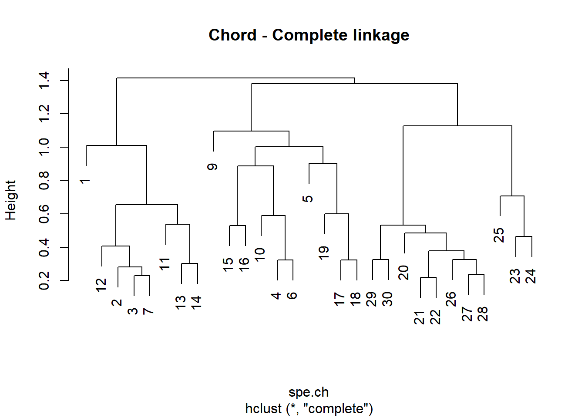
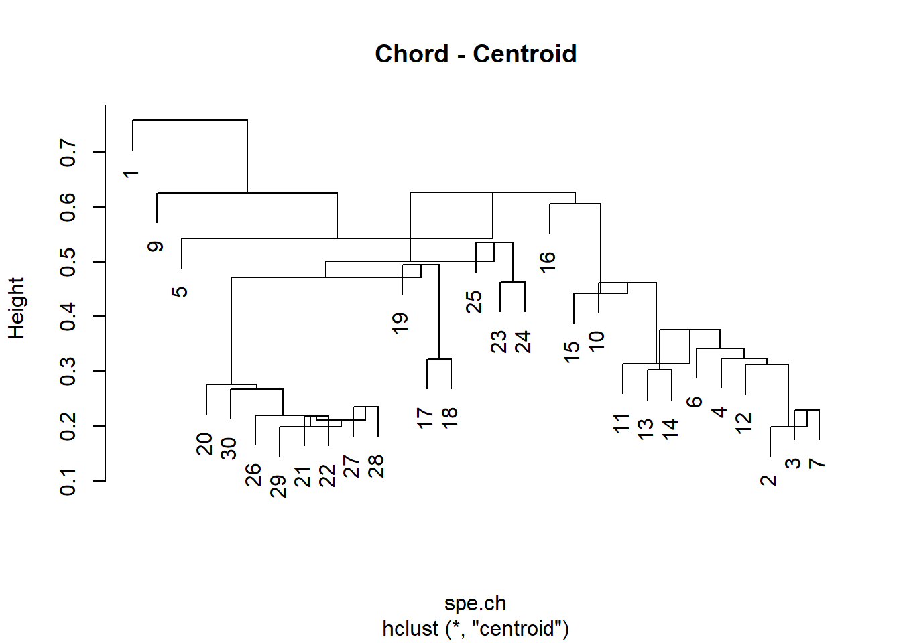
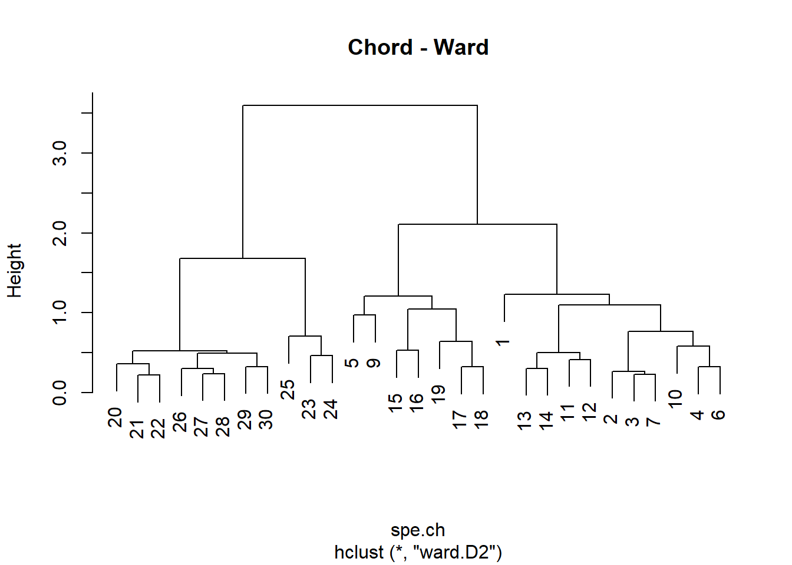
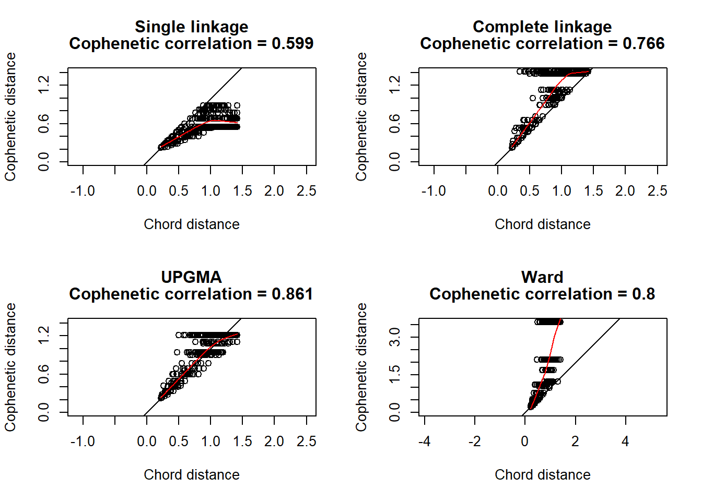
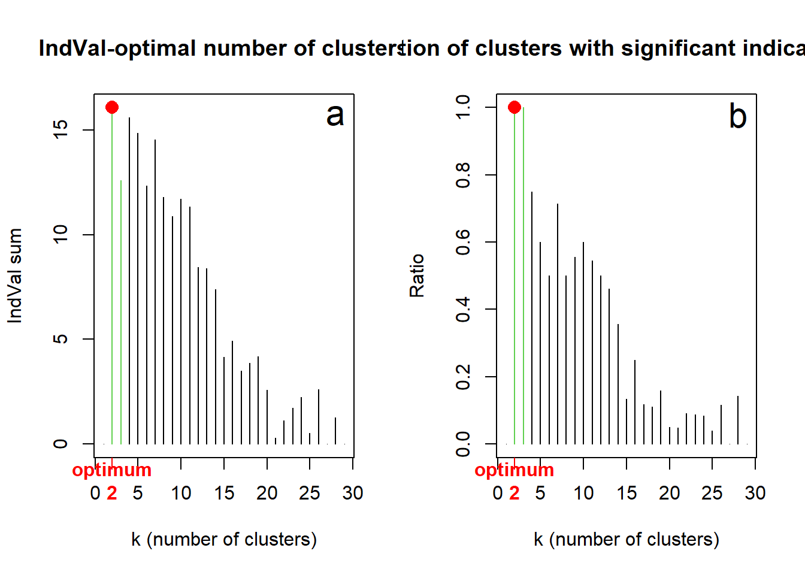

# Das Moordatenset sveg laden
library("readr")
sveg <- read_delim("datasets/stat5-8/dave_sveg.csv")
## Error: 'datasets/stat5-8/dave_sveg.csv' does not exist in current working directory ('C:/Users/luoe/Documents/Coding/Research Methods/HS23').
# PCA und CA rechnen
library("vegan")
pca <- rda(sveg^0.25, scale = TRUE)
## Error in rda(sveg^0.25, scale = TRUE): object 'sveg' not found
ca <- cca(sveg^0.5)
## Error in cca(sveg^0.5): object 'sveg' not found
# k-means-Clustering mit 4 Gruppen durchführen
kmeans.1 <- kmeans(sveg, 4)
## Error in as.matrix(x): object 'sveg' not foundStat8: Demo
- Download dieses Demoscript via “</>Code” (oben rechts)
- Datensatz Doubs.RData
- Datensatz dave_sveg.csv von Wildi (2017)
- Funktion drawmap.R drawmap.R
- Funktion hcoplot.R hcoplot.R
k-means clustering
# Clustering-Resultat in Ordinationsplots darstellen
plot(ca, type = "n")
## Error in plot(ca, type = "n"): object 'ca' not found
points(ca, display = "sites", pch=19, col = kmeans.1[[1]])
## Error in points(ca, display = "sites", pch = 19, col = kmeans.1[[1]]): object 'ca' not found
# k-means Clustering mit 3 Clusters
kmeans.2 <- kmeans(sveg, 3)
## Error in as.matrix(x): object 'sveg' not found
plot(pca, type = "n")
## Error in plot(pca, type = "n"): object 'pca' not found
points(pca, display = "sites", pch=19, col = kmeans.2[[1]])
## Error in points(pca, display = "sites", pch = 19, col = kmeans.2[[1]]): object 'pca' not found
# mit 3. Achse darstellen
plot(pca, choices = c(1, 3), type = "n")
## Error in plot(pca, choices = c(1, 3), type = "n"): object 'pca' not found
points(pca, choices = c(1, 3), display = "sites", pch = 19, col=kmeans.2[[1]])
## Error in points(pca, choices = c(1, 3), display = "sites", pch = 19, col = kmeans.2[[1]]): object 'pca' not found
# k-means partitioning, 2 to 10 groups
KM.cascade <- cascadeKM(sveg, inf.gr = 2, sup.gr = 10, iter = 100, criterion = "ssi")
## Error in as.matrix(data): object 'sveg' not found
summary(KM.cascade)
## Error in summary(KM.cascade): object 'KM.cascade' not found
KM.cascade$results
## Error in eval(expr, envir, enclos): object 'KM.cascade' not found
KM.cascade$partition
## Error in eval(expr, envir, enclos): object 'KM.cascade' not found
# k-means visualisation
plot(KM.cascade, sortg = TRUE)
## Error in plot(KM.cascade, sortg = TRUE): object 'KM.cascade' not foundAgglomarative Clusteranalyse
mit Daten und Skripten aus Borcard u. a. (2011)
# Daten laden
load("datasets/stat5-8/Doubs.RData") # Remove empty site 8
spe <- spe[-8, ]
env <- env[-8, ]
spa <- spa[-8, ]
latlong <- latlong[-8, ]Dendogramme berechnen und ploten
## Hierarchical agglomerative clustering of the species abundance
library("cluster")
# Compute matrix of chord distance among sites
spe.norm <- decostand(spe, "normalize")
spe.ch <- vegdist(spe.norm, "euc")
# Attach site names to object of class 'dist'
attr(spe.ch, "Labels") <- rownames(spe)
par(mfrow = c(1, 1))
# Compute single linkage agglomerative clustering
spe.ch.single <- hclust(spe.ch, method = "single")
# Plot a dendrogram using the default options
plot(spe.ch.single, labels = rownames(spe), main = "Chord - Single linkage")
# Compute complete-linkage agglomerative clustering
spe.ch.complete <- hclust(spe.ch, method = "complete")
plot(spe.ch.complete, labels = rownames(spe), main = "Chord - Complete linkage")
# Compute UPGMA agglomerative clustering
spe.ch.UPGMA <- hclust(spe.ch, method = "average")
plot(spe.ch.UPGMA, labels = rownames(spe), main = "Chord - UPGMA")
# Compute centroid clustering
spe.ch.centroid <- hclust(spe.ch, method = "centroid")
plot(spe.ch.centroid, labels = rownames(spe), main = "Chord - Centroid")
# Compute Ward's minimum variance clustering
spe.ch.ward <-hclust(spe.ch, method = "ward.D2")
plot(spe.ch.ward, labels = rownames(spe), main = "Chord - Ward")
# Compute beta-flexible clustering using cluster::agnes()
# beta = -0.1
spe.ch.beta1 <- agnes(spe.ch, method = "flexible", par.method = 0.55)
# beta = -0.25
spe.ch.beta2 <- agnes(spe.ch, method = "flexible", par.method = 0.625)
# beta = -0.5
spe.ch.beta3 <- agnes(spe.ch, method = "flexible", par.method = 0.75)
# Change the class of agnes objects
class(spe.ch.beta1)
## [1] "agnes" "twins"
spe.ch.beta1 <- as.hclust(spe.ch.beta1)
class(spe.ch.beta1)
## [1] "hclust"
spe.ch.beta2 <- as.hclust(spe.ch.beta2)
spe.ch.beta3 <- as.hclust(spe.ch.beta3)
par(mfrow = c(2, 2))
plot(spe.ch.beta1, labels = rownames(spe), main = "Chord - Beta-flexible (beta=-0.1)")
plot(spe.ch.beta2, labels = rownames(spe), main = "Chord - Beta-flexible (beta=-0.25)")
plot(spe.ch.beta3, labels = rownames(spe), main = "Chord - Beta-flexible (beta=-0.5)")
# Compute Ward's minimum variance clustering
spe.ch.ward <- hclust(spe.ch, method = "ward.D2")
plot(spe.ch.ward, labels = rownames(spe), main = "Chord - Ward")
Cophenetic correlations
# Single linkage clustering
spe.ch.single.coph <- cophenetic(spe.ch.single)
cor(spe.ch, spe.ch.single.coph)
## [1] 0.599193
# Complete linkage clustering
spe.ch.comp.coph <- cophenetic(spe.ch.complete)
cor(spe.ch, spe.ch.comp.coph)
## [1] 0.7655628
# Average clustering
spe.ch.UPGMA.coph <- cophenetic(spe.ch.UPGMA)
cor(spe.ch, spe.ch.UPGMA.coph)
## [1] 0.8608326
# Ward clustering
spe.ch.ward.coph <- cophenetic(spe.ch.ward)
cor(spe.ch, spe.ch.ward.coph)
## [1] 0.7998516
# Shepard-like diagrams
par(mfrow = c(2, 2))
plot(spe.ch, spe.ch.single.coph,
xlab = "Chord distance", ylab = "Cophenetic distance",
asp = 1, xlim = c(0, sqrt(2)), ylim = c(0, sqrt(2)),
main = c("Single linkage", paste("Cophenetic correlation =",
round(cor(spe.ch, spe.ch.single.coph), 3))))
abline(0, 1)
lines(lowess(spe.ch, spe.ch.single.coph), col = "red")
plot(spe.ch, spe.ch.comp.coph,
xlab = "Chord distance", ylab = "Cophenetic distance",
asp = 1, xlim = c(0, sqrt(2)), ylim = c(0, sqrt(2)),
main = c("Complete linkage", paste("Cophenetic correlation =",
round(cor(spe.ch, spe.ch.comp.coph), 3))))
abline(0, 1)
lines(lowess(spe.ch, spe.ch.comp.coph), col = "red")
plot(spe.ch, spe.ch.UPGMA.coph,
xlab = "Chord distance", ylab = "Cophenetic distance",
asp = 1, xlim = c(0, sqrt(2)), ylim = c(0, sqrt(2)),
main = c("UPGMA", paste("Cophenetic correlation =",
round( cor(spe.ch, spe.ch.UPGMA.coph), 3))))
abline(0, 1)
lines(lowess(spe.ch, spe.ch.UPGMA.coph), col = "red")
plot(spe.ch, spe.ch.ward.coph,
xlab = "Chord distance", ylab = "Cophenetic distance",
asp = 1, xlim = c(0, sqrt(2)), ylim = c(0, max(spe.ch.ward$height)),
main = c("Ward", paste("Cophenetic correlation =",
round(cor(spe.ch, spe.ch.ward.coph), 3))))
abline(0, 1)
lines(lowess(spe.ch, spe.ch.ward.coph), col = "red")
Optimale Anzahl Cluster
library("labdsv")
## Select a dendrogram (Ward/chord) and apply three criteria
## to choose the optimal number of clusters
# Choose and rename the dendrogram ("hclust" object)
hc <- spe.ch.ward
# hc <- spe.ch.beta2
# hc <- spe.ch.complete
par(mfrow = c(1, 2))
# Average silhouette widths (Rousseeuw quality index)
Si <- numeric(nrow(spe))
for (k in 2:(nrow(spe) - 1))
{
sil <- silhouette(cutree(hc, k = k), spe.ch)
Si[k] <- summary(sil)$avg.width
}
k.best <- which.max(Si)
plot(1:nrow(spe), Si, type = "h",
main = "Silhouette-optimal number of clusters",
xlab = "k (number of clusters)", ylab = "Average silhouette width")
axis(1, k.best,paste("optimum", k.best, sep = "\n"), col = "red",
font = 2, col.axis = "red")
points(k.best,max(Si), pch = 16, col = "red",cex = 1.5)
# Optimal number of clusters according to matrix correlation
# statistic (Pearson)
# Homemade function grpdist from Borcard et al. (2018)
grpdist <- function(X)
{
require(cluster)
veg <- as.data.frame(as.factor(X))
distgr <- daisy(veg, "gower")
distgr
}
kt <- data.frame(k = 1:nrow(spe), r = 0)
for (i in 2:(nrow(spe) - 1))
{
gr <- cutree(hc, i)
distgr <- grpdist(gr)
mt <- cor(spe.ch, distgr, method = "pearson")
kt[i, 2] <- mt
}
k.best <- which.max(kt$r)
plot(kt$k,kt$r, type = "h",
main = "Matrix correlation-optimal number of clusters",
xlab = "k (number of clusters)", ylab = "Pearson's correlation")
axis(1, k.best, paste("optimum", k.best, sep = "\n"),
col = "red", font = 2, col.axis = "red")
points(k.best, max(kt$r), pch = 16, col = "red", cex = 1.5)
# Optimal number of clusters according as per indicator species
# analysis (IndVal, Dufrene-Legendre; package: labdsv)
IndVal <- numeric(nrow(spe))
ng <- numeric(nrow(spe))
for (k in 2:(nrow(spe) - 1))
{
iva <- indval(spe, cutree(hc, k = k), numitr = 1000)
gr <- factor(iva$maxcls[iva$pval <= 0.05])
ng[k] <- length(levels(gr)) / k
iv <- iva$indcls[iva$pval <= 0.05]
IndVal[k] <- sum(iv)
}
k.best <- which.max(IndVal[ng == 1]) + 1
col3 <- rep(1, nrow(spe))
col3[ng == 1] <- 3
par(mfrow = c(1, 2))
plot(1:nrow(spe), IndVal, type = "h",
main = "IndVal-optimal number of clusters",
xlab = "k (number of clusters)", ylab = "IndVal sum", col = col3)
axis(1,k.best,paste("optimum", k.best, sep = "\n"),
col = "red", font = 2, col.axis = "red")
points(which.max(IndVal),max(IndVal),pch = 16,col = "red",cex = 1.5)
text(28, 15.7, "a", cex = 1.8)
plot(1:nrow(spe),ng,
type = "h",
xlab = "k (number of clusters)",
ylab = "Ratio",
main = "Proportion of clusters with significant indicator species",
col = col3)
axis(1,k.best,paste("optimum", k.best, sep = "\n"),
col = "red", font = 2, col.axis = "red")
points(k.best,max(ng), pch = 16, col = "red", cex = 1.5)
text(28, 0.98, "b", cex = 1.8)
Final dendrogram with the selected clusters
# Choose the number of clusters
k <- 4
# Silhouette plot of the final partition
spech.ward.g <- cutree(spe.ch.ward, k = k)
sil <- silhouette(spech.ward.g, spe.ch)
rownames(sil) <- row.names(spe)
plot(sil, main = "Silhouette plot - Chord - Ward", cex.names = 0.8, col = 2:(k + 1), nmax = 100)
# Reorder clusters
library("gclus")
spe.chwo <- reorder.hclust(spe.ch.ward, spe.ch)
# Plot reordered dendrogram with group labels
par(mfrow = c(1, 1))
plot(spe.chwo, hang = -1, xlab = "4 groups", ylab = "Height", sub = "",
main = "Chord - Ward (reordered)", labels = cutree(spe.chwo, k = k))
rect.hclust(spe.chwo, k = k)
# Plot the final dendrogram with group colors (RGBCMY...)
# Fast method using the additional hcoplot() function:
# Usage:
# hcoplot(tree = hclust.object,
# diss = dissimilarity.matrix,
# lab = object labels (default NULL),
# k = nb.clusters,
# title = paste("Reordered dendrogram from",deparse(tree$call),
# sep="\n"))
source("stat5-8/hcoplot.R")
hcoplot(spe.ch.ward, spe.ch, lab = rownames(spe), k = 4)
# Plot the Ward clusters on a map of the Doubs River
# (see Chapter 2)
source("stat5-8/drawmap.R")
drawmap(xy = spa, clusters = spech.ward.g, main = "Four Ward clusters along the Doubs River")Miscellaneous graphical outputs
# konvertieren von "hclust" Objekt in ein Dendogram Objekt
dend <- as.dendrogram(spe.ch.ward)
# Heat map of the dissimilarity matrix ordered with the dendrogram
heatmap(as.matrix(spe.ch), Rowv = dend, symm = TRUE, margin = c(3, 3))
# Ordered community table
# Species are ordered by their weighted averages on site scores.
# Dots represent absences.
library("vegan")
or <- vegemite(spe, spe.chwo)
##
## 32222222222 111111 1111
## 09876210543959876506473221341
## Icme 5432121......................
## Abbr 54332431.....1...............
## Blbj 54542432.1...1...............
## Anan 54432222.....111.............
## Gyce 5555443212...11..............
## Scer 522112221...21...............
## Cyca 53421321.....1111............
## Rham 55432333.....221.............
## Legi 35432322.1...1111............
## Alal 55555555352..322.............
## Chna 12111322.1...211.............
## Titi 53453444...1321111.21........
## Ruru 55554555121455221..1.........
## Albi 53111123.....2341............
## Baba 35342544.....23322.........1.
## Eslu 453423321...41111..12.1....1.
## Gogo 5544355421..242122111......1.
## Pefl 54211432....41321..12........
## Pato 2211.222.....3344............
## Sqce 3443242312152132232211..11.1.
## Lele 332213221...52235321.1.......
## Babl .1111112...32534554555534124.
## Teso .1...........11254........23.
## Phph .1....11...13334344454544455.
## Cogo ..............1123......2123.
## Satr .1..........2.123413455553553
## Thth .1............11.2......2134.
## 29 sites, 27 species